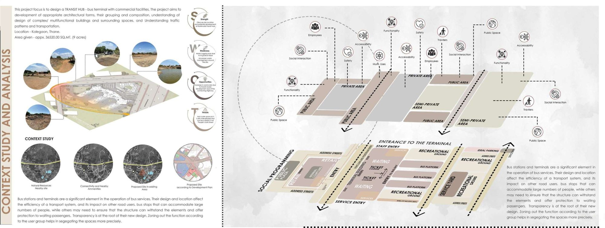
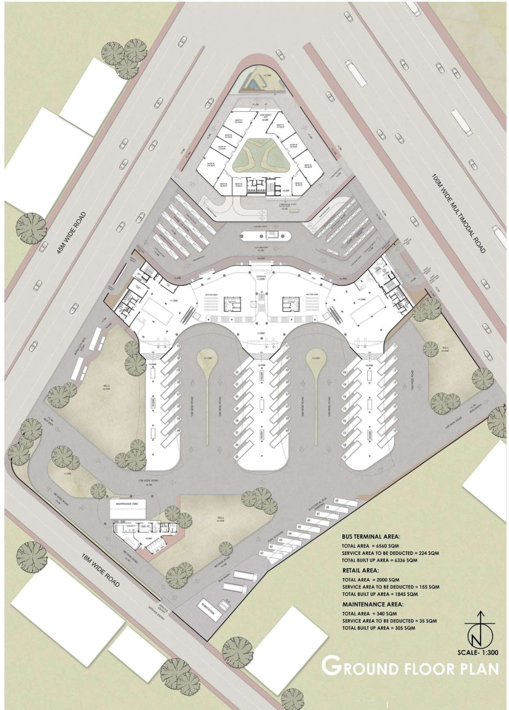
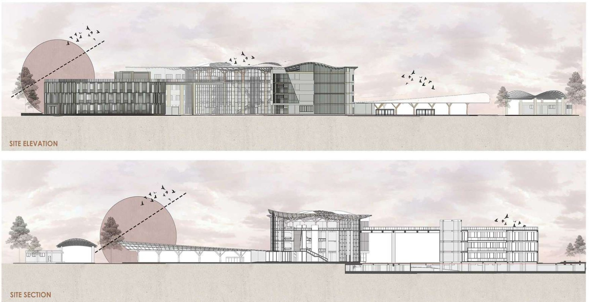

Work / 05 · Design studio
Transit Oasis
A bus terminal with commercial and stay facilities, organised along a single “symphonic axis”.

- Type
- Architectural design studio, Semester 9
- Year
- 2023
- Location
- Kole village, Katai Naka Highway, Kalyan (Thane)
- Programme
- Bus terminal, retail, stay and maintenance facilities
- Site area
- 36,520 m² (9 acres)
- Built-up area
- Terminal 6,336 m² · Retail 1,845 m² · Maintenance 305 m²
- Scope
- Site analysis, programming, architecture, roof structure and construction details, physical model
A bus terminal shapes how a city is experienced by thousands of people every day. The brief was a transit hub on a nine-acre site at the junction of a 100 m multimodal road and two smaller roads. It called for a complex, multifunctional building whose design had to account for traffic, infrastructure and services as much as form.
Spaces were zoned by who uses them (travellers, staff and service) into public, semi-private and private areas, so that circulation stays legible even at peak hours. Transparency guided the design: glazed concourses open the interior to the outdoors and to daylight.
“Transit is not just about moving from one place to another; it's about the journey that shapes our perspectives and connects us to the surrounding.” Concept: the symphonic axis
01Site and programme
A SWOT study of the site and its surroundings (natural resources, connectivity, nearby amenities and the development plan) informed a zoning diagram that separates entrances, ticketing and waiting, bus platforms, recreational grounds and the service yard.


02Concept and form
A central axis acts as the backbone of the plan, ordering every room, corridor and alcove along a sequence of spaces. Functions were split between a commercial block and the terminal building, the form evolved through circulation, and the two were joined by a landscaped recreational bridge.





03Structure and construction
The parametric roof is built from GFRC panels carried on tapered steel-tube “trees”. Vertical fins cast shadow across the elevation, planters temper the microclimate, and the narrow cantilever around the building shades the ground floor. Roof, terrace-garden and façade junctions were detailed at 1:10 and 1:15.


04Model and views
A physical model tested the roof form and the relationship between the terminal, bus bays and commercial block.